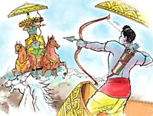

Yuddha Kanda gives information about the defeat of Ravana, the release of Sita, their returning to Ayodhya, and the coronation of Rama.
The Yuddha Kanda or sixth section of Valmiki's long poem, tells of the fateful meeting between Rama and his rival, Ravana,
of their final fights of Sita's release from captivity; and of the reunited couple's return to Ayodhya.